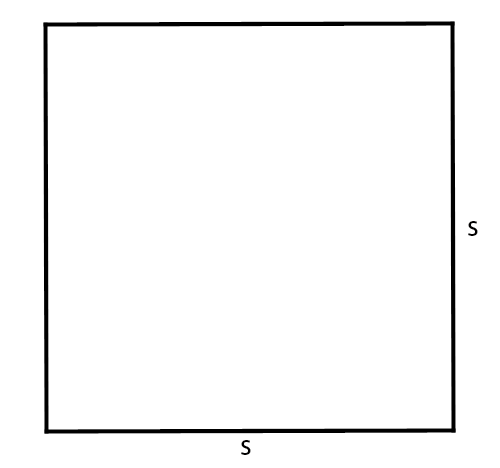

KALKULATOR PERSEGI
MENGHITUNG LUAS PERSEGI

Rumus :
Luas : S x S
S : Sisi
Hitung Luas Persegi :
Hitung
MENGHITUNG KELILING PERSEGI
Rumus :
Keliling : 4 x S
S : Sisi
Hitung Keliling Persegi :
Hitung
Reset Semua